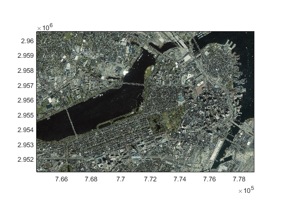
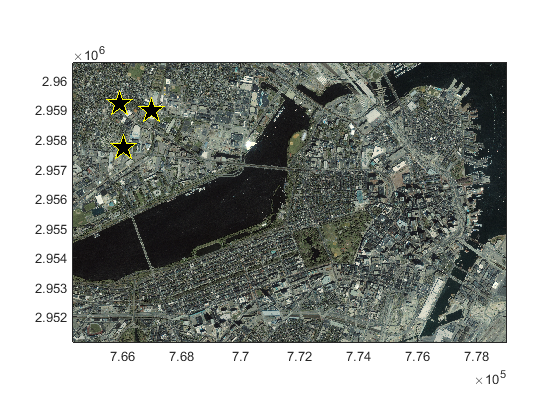
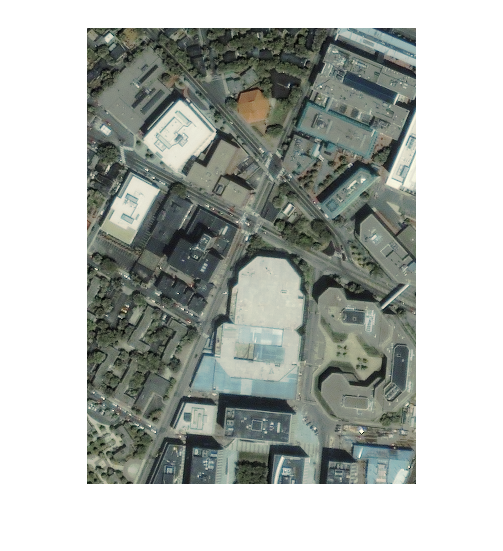
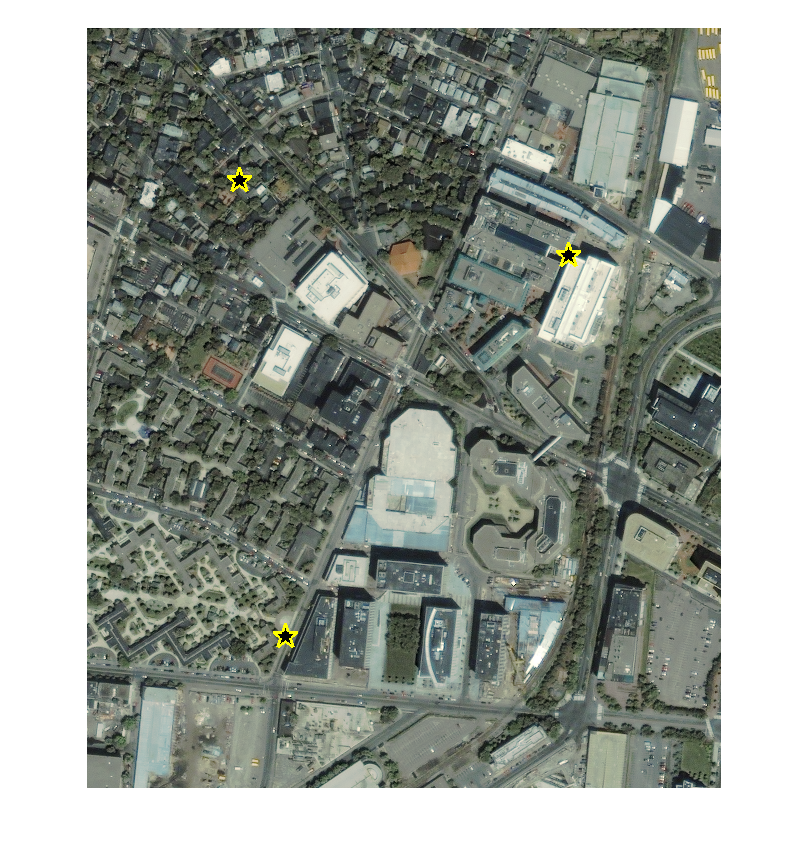
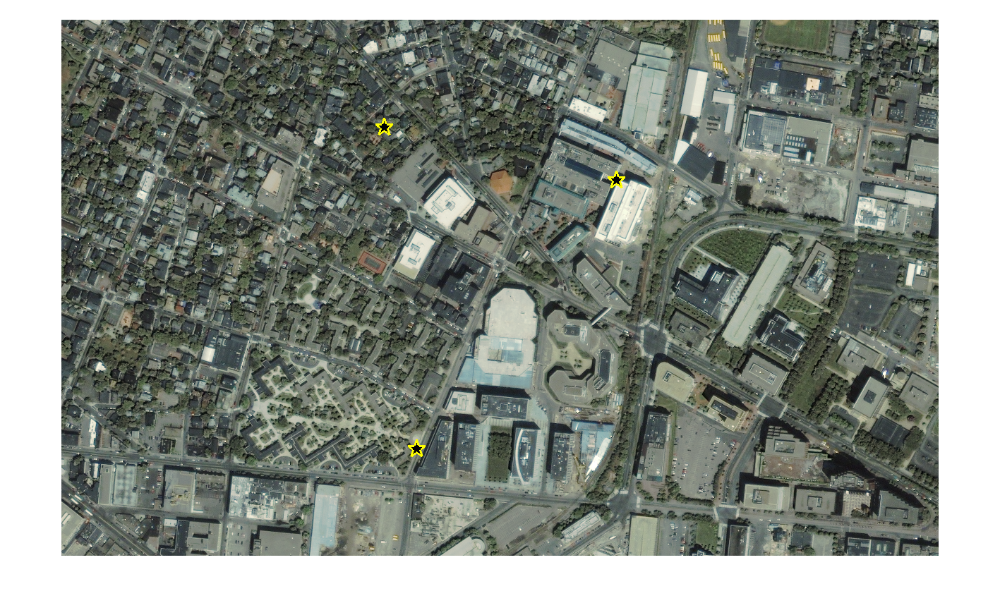
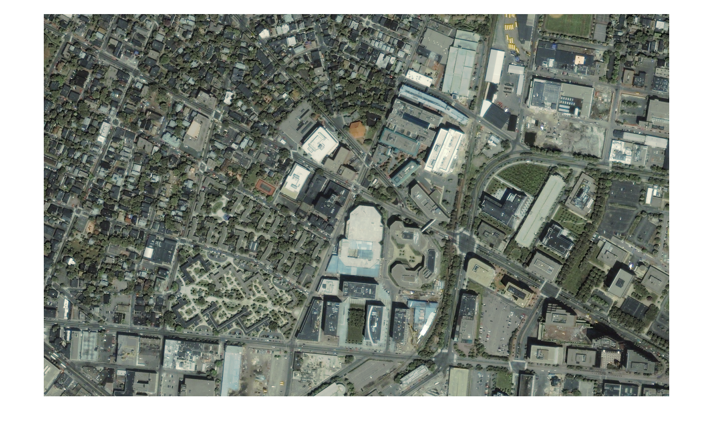
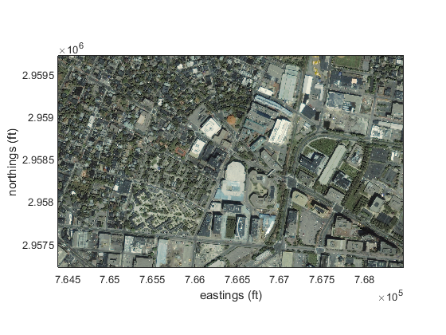
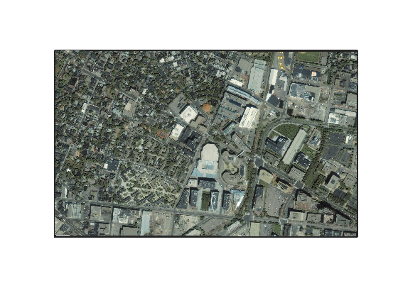

geoimread
This function reads a sub region of a geotiff or geojp2 image.
Contents
Syntax
A = geoimread(filename) A = geoimread(filename,xlim,ylim) A = geoimread(filename,latlim,lonlim) A = geoimread(...,buffer) [A,x,y,I] = geoimread(...) geoimread(...)
Description
A = geoimread(filename) returns the full image given by a filename. This syntax is equivalent to A = geotiffread(filename).
A = geoimread(filename,xlim,ylim) limits the region of the geotiff file to the limits given by xlim and ylim, which are map units (usually meters) relative to the data projection. For example, if the geotiff is projected in Texas Centric Mapping System/Lambert Conformal coordinates, xlim and ylim will have units of meters relative to the origin (100 W, 18 N). xlim and ylim can be multimensional, in which case the limits of the map will be taken as the limits of the limits of the distribution of all points in xlim, ylim.
A = geoimread(filename,latlim,lonlim) if no values in xlim, ylim exceed normal values of latitudes and longitudes, geoimread assumes you've entered limits in geographic coordinates of degrees latitude and longitude. The first input is latitude, the second input is longitude (this order is switched from the original geoimread function.)
A = geoimread(...,buffer) adds a buffer in map units (usually meters or feet) to the limits of the region of interest. This may be useful if you want to load an image surrounding scattered lat/lon data. If you'd like an extra 2 kilometers of image around your data, enter 2000 as the buffer. If buffer is a two-element vector, the first element is applied to the left and right extents of the image, and the second element is applied to the top and bottom extents of the image.
[A,x,y,I] = geoimread(...) also returns pixel center coordinates (x,y) of the output image and a geotiff info structure I. I is a useful input for projfwd and projinv.
geoimread(...) without any outputs shows the output image A without loading any data into the workspace.
Examples
Start by using Matlab's example shown in the documentation for geotiffread:
[A,R] = geotiffread('boston.tif');
mapshow(A,R)
 And you have some measurements corresponding to the following map x,y coordinates:
mapx = [765884 766035 766963]; mapy = [2959218 2957723 2958972]; hold on plot(mapx,mapy,'yp','markersize',20,'linewidth',1,'markerfacecolor','k')
There's no sense in reading that whole boston.tif file if you're only interested in the top left corner of the image, so we use geoimread to read only the portion of the image bound by our data:
close % closes the previous figure geoimread('boston.tif',mapx,mapy)
Above, geoimread has read and shown the part of Boston that is bound by our three data points, but sometimes we want context for our measurements. Add a 500 foot buffer around the data points (note that units of the Boston map are given in feet):
close geoimread('boston.tif',mapx,mapy,500) hold on; plot(mapx,mapy,'yp','markersize',20,'linewidth',2,'markerfacecolor','k')
Similarly, you may want the buffer to be 1500 feet in the x direction and 500 feet in the y direction:
close geoimread('boston.tif',mapx,mapy,[1500 500]) hold on; plot(mapx,mapy,'yp','markersize',20,'linewidth',2,'markerfacecolor','k')
It is possible that you don't have data in map x/y coordinates. If you walk around Boston with a GPS device and take measurements, it's more likely that your data points are in lat/lon coordinates. If that's the case, just enter lat/lons instead of x/y values:
lat = [42.3675288 42.3634246 42.3668397];
lon = [-71.0940009 -71.0934685 -71.0900125];
close
geoimread('boston.tif',lat,lon,[1500 500]);
 Returning data
To get data from geoimread without showing it in a figure, simply request outputs like this:
[A,x,y,I] = geoimread('boston.tif',lat,lon,[1500 500]);
To show that data as an image, try this:
close imshow(A,'XData',x,'YData',y) axis xy
To show the image in map coordinates, do this:
close mapshow(A,I.RefMatrix) axis tight xlabel('eastings (ft)') ylabel('northings (ft)')
To show the data in georeferenced coordinates, do this:
[xgrid,ygrid] = meshgrid(x,y); [latgrid,longrid] = projinv(I,xgrid,ygrid); close usamap([min(latgrid(:)) max(latgrid(:))],[min(longrid(:)) max(longrid(:))]) geoshow(latgrid,longrid,A)
Author Info
This function was created by Aslak Grinsted in 2014 and includes some modifications made by Chad A. Greene of the University of Texas at Austin's Institute for Geophysics.